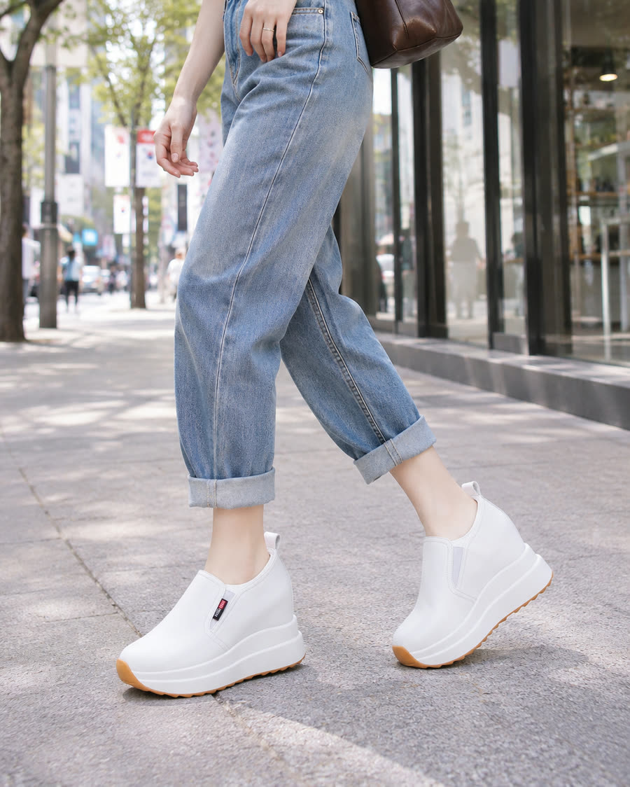

Giày độn đế 10cm da bò thật — Review sneaker Hàn Quốc JB25
Một đôi vừa cao 10cm tôn dáng, vừa làm từ da bò thật để đi bền cả năm? JB25 là sneaker da bò tách lớp chuẩn Hàn Quốc, thân giày đục lỗ thông khí cho chân luôn khô thoáng — hai màu Trắng lỗ và Đen lỗ.


Vì sao nên chọn giày độn da bò thật?
Phần lớn giày độn trên thị trường dùng da PU công nghiệp. JB25 khác ở chỗ dùng da bò thật tách lớp: bề mặt đanh mịn, có độ đàn hồi tự nhiên, càng đi càng mềm và ôm chân, độ bền vượt trội. Với mức cao 10cm, đây là đôi vừa tôn dáng rõ vừa "đáng đồng tiền" để gắn bó lâu dài.
Điểm tinh tế: thân giày đục lỗ thông khí — vừa là chi tiết thời trang (tạo nên tên gọi "Trắng lỗ / Đen lỗ"), vừa giúp chân "thở", xoá nỗi lo bí bách hay mùi kể cả khi mang cả ngày.


Ảnh thật JB25: (trái) banner độn đế 10cm · (phải) da bò tách lớp & lỗ thông khí.
Cao 10cm đi có êm không?
Có. Phần độn của JB25 là kiểu độn ẩn nằm bên trong, kết hợp đế PU đàn hồi, giảm chấn tốt — nâng đều cả bàn chân nên đi bộ, đứng lâu vẫn thoải mái, bảo vệ gót và khớp gối. Form Hàn Quốc ôm gọn, chắc chân mà không gò bó.


Giày độn da bò 10cm hợp với ai?
- Nàng 25–50 tuổi thích đồ bền, chất da thật sang, trẻ trung để "hack tuổi".
- Người đi nhiều, mang cả ngày — cần đôi thoáng chân, êm và bền form.
- Bạn muốn cao 10cm mà vẫn giữ nét thanh lịch, dễ phối đồ công sở.
Phối đồ với sneaker da bò 10cm
- Quần jeans + áo thun / sơ mi — bản Trắng lỗ sáng, trẻ trung, dễ phối nhất.
- Chân váy, đồ công sở — da bò sang nên lên đồ thanh lịch, không "thể thao" quá.
- Bản Đen lỗ + tông trung tính — cá tính, gọn gàng, hợp đi làm.
Mới đi giày độn? Tham khảo: giày độn 8cm da bò JB597 dễ đi.
Thông số nhanh mẫu JB25
| Tiêu chí | JB25 | Ghi chú |
|---|---|---|
| Tăng chiều cao | 10cm | Độn ẩn, tôn dáng rõ |
| Chất liệu | Da bò thật tách lớp | Đục lỗ thông khí, bền đẹp |
| Phiên bản màu | 2 màu | Trắng lỗ · Đen lỗ |
| Size | 34–39 | Phom nhỏ — nên tăng 1 size |
Câu hỏi thường gặp
JB25 làm từ da gì?
Da bò thật tách lớp — bề mặt mịn, đàn hồi tự nhiên, càng đi càng mềm, bền hơn hẳn da công nghiệp; thân giày đục lỗ thông khí cho chân khô thoáng.
JB25 có mấy màu?
Hai màu: Trắng lỗ và Đen lỗ — bản trắng và bản đen, đều có lỗ thông khí trên thân da bò.
JB25 giá bao nhiêu, còn size nào?
Giá và size còn hàng xem trực tiếp tại trang mẫu JB25 hoặc nhắn Zalo để được tư vấn nhanh.
Muốn một đôi độn 10cm da bò thật, bền đẹp cả năm?
Nhắn Jebee size chân & màu thích (Trắng lỗ / Đen lỗ) — tụi mình tư vấn mẫu JB25 trong 1 phút, freeship toàn quốc, đổi size miễn phí 15 ngày.
Nhắn Zalo tư vấn Xem mẫu JB25